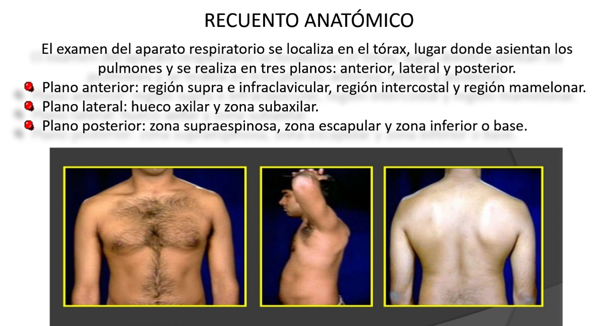
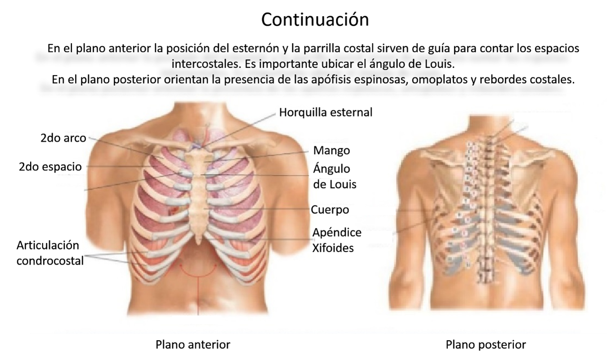
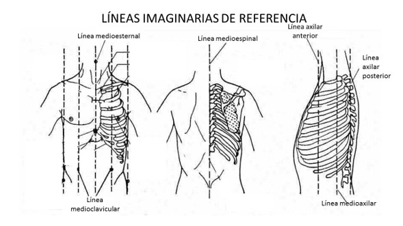

Módulo 7: Aparato Respiratorio (Primera Parte)
Escena 1: Recuento anatómico
Objetivo: Aprender la anatomía del aparato respiratorio para su correcta exploración.



Objetivo: Aprender la anatomía del aparato respiratorio para su correcta exploración.


